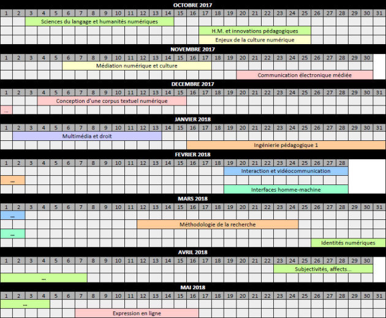
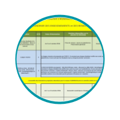
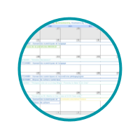

Planning annuel des cours
Une vue macro sur le découpage de l'année à venir


Nous vous proposons le téléchargement d'un planning macro au format A4. [pdf]

Nous vous proposons également le téléchargement d'un planner mensuel au format A4 [pdf][1].
(alternative de téléchargement ici)
Vous pouvez néanmoins obtenir ce genre de vue via votre outil de calendrier préféré en utilisant des fichiers *.ICS
(voir section suivante)